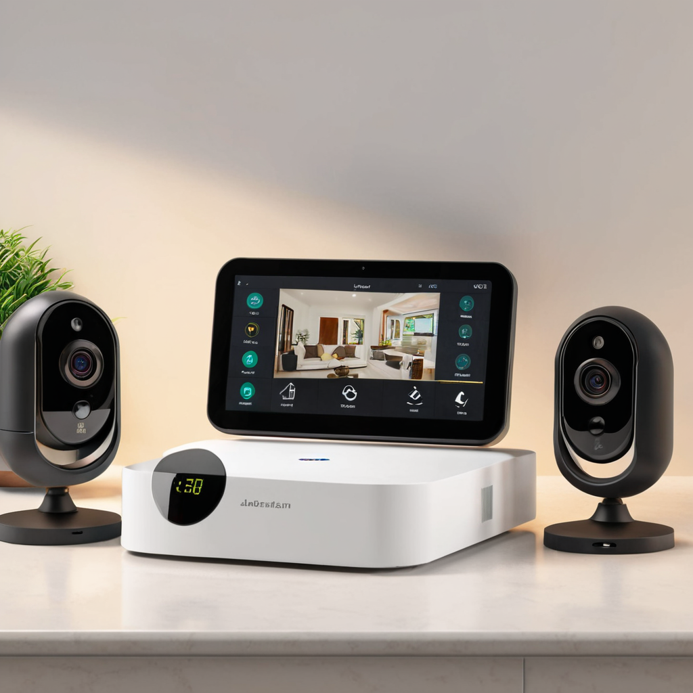
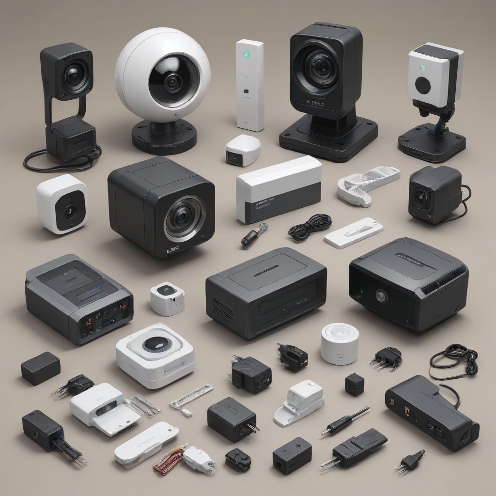

As we move through 2026, the landscape of residential protection has shifted dramatically. The days of waiting weeks for a technician to install hardwired equipment are largely over. Today, the most effective protection comes from flexible, user-controlled networks that adapt to your lifestyle. Whether you are a homeowner looking to protect a mortgage or a renter needing a solution that leaves no trace, understanding the best DIY home security systems 2026 is essential for your peace of mind.
Security technology has matured to a point where professional-grade reliability is accessible without professional installation fees. Modern systems leverage advanced sensors, AI-driven cameras, and cellular backup to ensure your home remains safe even when the power goes out. However, with dozens of brands flooding the market, choosing the right one can be overwhelming. This comprehensive guide cuts through the marketing noise to provide a practical, safety-focused comparison of the leading platforms available this year.
We prioritize systems that offer genuine safety features over gimmicks. From understanding battery life during power outages to evaluating night vision capabilities on cameras, we focus on what actually keeps you safe. Our analysis covers pricing transparency, contract flexibility, and integration capabilities to help you build a robust defense for your family without breaking the bank.
Why Choose a DIY Home Security System in 2026?

The decision to go do-it-yourself is no longer just about saving money; it is about control and customization. In 2026, a wireless home alarm system offers significant advantages over traditional hardwired setups. The primary benefit is portability. If you move, you can simply unplug your hub and sensors and take them with you. This eliminates the high cancellation fees associated with traditional alarm companies.
Furthermore, DIY systems allow for modular scaling. You do not need to buy a massive pre-packaged kit if you only need protection for your main entry points. You can start with a hub and two door sensors, then add cameras or motion detectors as your budget allows. This incremental approach is ideal for those on a budget who still want reliable protection.
- Cost Efficiency: You avoid installation fees that can range from $100 to $500 with traditional providers.
- No Long-Term Contracts: Most modern systems operate on a month-to-month basis, giving you the freedom to cancel or switch monitoring plans.
- Smart Home Integration: DIY systems are designed to work seamlessly with smart locks, lights, and voice assistants like Alexa and Google Assistant.
- Immediate Setup: You can have a system up and running in under an hour, rather than waiting for a scheduled appointment.
However, it is crucial to understand that DIY does not mean "do it poorly." Pro
Top Picks for Best DIY Home Security Systems 2026
After extensive testing and analysis of market offerings, four systems stand out as the leaders in the industry. Each caters to a slightly different demographic, from tech enthusiasts to budget shoppers. Below, we break down the hardware, software, and value proposition of each.
SimpliSafe
SimpliSafe remains the gold standard for reliability in the DIY sector. Their 2026 lineup features an updated Base Station 2 that includes built-in cellular backup and Wi-Fi. The hardware is designed to be tamper-resistant, a critical safety feature often overlooked by cheaper competitors. The sensors communicate via a proprietary protocol that is resistant to jamming, ensuring that a burglar cannot easily block the signal between your door sensor and the hub.
The monitoring service is optional but highly recommended for serious protection. Their professional monitoring centers are UL-certified, meaning they adhere to strict safety standards. If you choose to go without monitoring, the system still triggers a loud local siren to alert neighbors and scare off intruders. The mobile app is intuitive, offering real-time alerts so you know exactly which door was opened.
- Pros: UL-certified monitoring, no contracts, excellent battery life, cellular backup included in base.
- Cons: Professional monitoring is a separate cost, no local storage option for cameras without a subscription.
Ring Alarm Pro
For households already invested in the Amazon ecosystem, the Ring Alarm Pro is a powerhouse. The unique selling point of this system is the built-in eero Wi-Fi 6 Pro router. This means the security hub also acts as a high-speed router for your home, reducing clutter. It features a built-in siren and supports Zigbee, Z-Wave, and Wi-Fi devices, making it one of the most versatile hubs available.
Ring's integration with Alexa allows for voice arming and disarming, which is convenient for users with mobility issues. However, the reliance on Wi-Fi for the router function means that if the internet goes down, both your security and your internet connectivity are affected unless you have a cellular backup plan. The cameras integrate seamlessly, allowing you to view feeds from Ring, Blink, or Arlo devices within the same app.
- Pros: Built-in router, excellent Alexa integration, versatile smart home hub.
- Cons: Higher upfront cost, requires a subscription for advanced camera features.
Arlo Secure
Arlo has transitioned into a comprehensive security suite. While known for cameras, their 2026 security kit includes robust sensors and a smart hub. The standout feature here is the video verification. If a motion sensor is triggered, the system automatically checks the camera feed to confirm if it is a person before calling the police. This drastically reduces false alarms, which can lead to fines in some municipalities.
The hardware is premium, often using stainless steel and weather-resistant materials suitable for harsh climates. However, Arlo leans heavily on subscriptions. While the hardware works locally to some degree, most features like cloud storage and video verification require the Arlo Secure plan. This makes the total cost of ownership higher than SimpliSafe over time.
- Pros: Superior video quality, video verification technology, weather-resistant hardware.
- Cons: Expensive subscription costs, battery life on sensors can be inconsistent.
Wyze Home Security
Wyze continues to dominate the budget category. For those seeking affordable home security systems, Wyze offers a complete starter kit for a fraction of the cost of its competitors. The sensors are simple, the app is straightforward, and the cameras offer impressive night vision for the price point. Wyze has also improved its camera storage options, allowing for local SD card storage which bypasses monthly fees.
The trade-off with Wyze is the lack of professional monitoring options directly through the system. You can self-monitor, but if you need police dispatch, you must arrange that separately. The hardware build quality is plastic and functional, but not as rugged as Arlo or SimpliSafe. It is perfect for apartments, small homes, or as a secondary layer of security.
- Pros: Extremely low entry price, local storage options, easy to expand.
- Cons: No professional monitoring integration, build quality is basic, app can be cluttered.
Comparison Table: Features and Pricing
To visualize the differences between these top contenders, we have compiled a detailed comparison table. This breakdown highlights the critical differences in monthly costs, contract requirements, and hardware capabilities.
| System | Starter Kit Price | Monthly Monitoring | Contract Required | Cellular Backup | Video Verification |
|---|---|---|---|---|---|
| SimpliSafe | $219 - $299 | $22.99/mo | No | Yes (Built-in) | No |
| Ring Alarm Pro | $249 - $329 | $10 - $20/mo | No | Yes (Optional Plan) | No |
| Arlo Secure | $399 - $499 | $4.99 - $19.99/mo | No | Yes (Hub) | Yes (Premium) |
| Wyze | $99 - $149 | $0 - $10/mo | No | No | No |
Note that prices are subject to change based on promotions and bundle availability. Always check the official retailer for the most current pricing on the best DIY home security systems 2026.
Key Features to Look for in a Wireless Home Alarm System
When evaluating a system, look beyond the marketing gloss. The following features are critical for ensuring your system functions as a safety net rather than a toy.
Cellular Backup
Your internet connection is the most vulnerable point in a modern security system. If a burglar cuts your Wi-Fi router or the ISP goes down, a Wi-Fi-only system becomes useless. A system with cellular backup, like SimpliSafe or Ring Alarm Pro, sends alarms via a cellular network. This ensures that even without internet, your alarm is dispatched to the monitoring center.
Power Outage Protection
During storms, power outages are common. Your security system must have a backup battery. Most modern base stations include a rechargeable battery that lasts 24 hours or more. Check the specifications to ensure the battery is replaceable or rechargeable. You do not want your system to die exactly when the neighborhood is vulnerable due to power loss.
Signal Jamming Protection
Sophisticated intruders may use signal jammers to block wireless frequencies. Look for systems that use encrypted protocols or mesh networking. If the signal strength drops suddenly, the system should alert you immediately. This feature is often found in higher-end models like the Arlo Secure ecosystem.
Integration with Smart Home Hubs
A security system should not exist in a vacuum. If your smart lights turn on when the alarm is armed, it simulates occupancy. If your smart lock locks automatically when you leave, it ensures no door is forgotten. Check compatibility with Matter, Zigbee, or Z-Wave protocols for maximum flexibility.
DIY Alarm System No Contract: Understanding the Cost
One of the biggest draws of modern security is the "no contract" model. However, understanding the true cost requires looking at the Total Cost of Ownership (TCO) over three years. DIY alarm system no contract options usually require a higher upfront investment in hardware. You are paying for the equipment upfront rather than renting it over 36 months.
Monitoring fees vary significantly. SimpliSafe charges around $23/month for professional monitoring, which includes police dispatch and cellular backup. Ring offers a cheaper tier but locks camera features behind a paywall. Wyze allows you to pay for hardware only, but you lose the safety net of professional monitoring.
Here is a breakdown of what to expect financially:
- Upfront Hardware: Expect to spend between $150 and $500 for a comprehensive starter kit covering doors, windows, and motion.
- Monthly Fees: Professional monitoring typically ranges from $15 to $25 per month. Self-monitoring is free but requires you to respond to every alert.
- Expansion Costs: Adding a single sensor costs $20-$40. Adding a camera costs $50-$150.
If you opt for a DIY alarm system no contract, you retain the right to cancel monitoring at any time. This is a significant financial advantage compared to traditional alarm companies that often charge $100 or more in cancellation fees if you break a 24-month contract.
Best DIY Security for Renters: Home Security for Renters 2026
Renters face unique challenges. They cannot drill holes for hardwired sensors, and they need to be able to take the system with them when they move. The home security for renters 2026 market has responded with adhesive-mounted sensors and portable hubs.
When choosing a system for an apartment, prioritize systems that use 3M adhesive strips rather than screws. SimpliSafe and Ring both offer adhesive mounts that hold the sensors securely without damaging the trim. This ensures you do not lose your security deposit. Additionally, look for systems that do not require complex wiring. A battery-powered system that runs on Wi-Fi or cellular is ideal.
Another consideration for renters is noise sensitivity. In an apartment complex, a loud siren can disturb neighbors and potentially cause issues with your landlord. Most systems allow you to adjust the siren volume or turn it off in favor of a silent alarm that notifies you and the authorities. This feature is a crucial compromise for shared living spaces.
Portability is also key. If you move mid-lease, you should be able to uninstall the system in under 30 minutes. Avoid systems that require deep integration with the building's infrastructure. Stick to standalone wireless kits that can be packed into a box and reinstalled in your new home immediately.
Integrating Best Smart Home Security Cameras
A perimeter sensor tells you someone is at the door, but a camera tells you who it is. The best smart home security cameras integrate directly with your alarm system to provide video verification. However, not all cameras are created equal. Indoor cameras should have privacy shutters, while outdoor cameras need to be weatherproof (IP65 rating or higher).
Night vision is non-negotiable. Ensure the cameras you choose offer color night vision or thermal imaging, which allows you to identify intruders even in pitch blackness. AI detection is another critical feature. In 2026, cameras should differentiate between a person, a pet, a vehicle, and a package. This prevents your phone from blowing up with alerts about a squirrel in the yard.
Storage is the final piece of the puzzle. Cloud storage is convenient but costs money monthly. Local storage via SD cards or a Network Video Recorder (NVR) allows you to save footage for free. However, local storage can be wiped if the camera is stolen. A hybrid approach—using local storage for daily recording and cloud for critical events—is often the most effective safety strategy.
Installation Tips for Maximum Security
Even the best system fails if installed incorrectly. Follow these expert tips to ensure your setup is robust.
- Hub Placement: Place your base station near your internet router and a power outlet. Ensure it is not hidden inside a cabinet, as this blocks Wi-Fi signals to sensors.
- Sensor Alignment: Door and window sensors must be aligned within 1/4 inch of each other. Test the sensor every time you close the door to ensure the app registers the change.
- Camera Angles: Mount outdoor cameras at least 9 feet high to prevent tampering. Angle them downward to capture faces, not just the tops of heads.
- Testing: Perform a full system test once every three months. Simulate a break-in to ensure the siren sounds and the app alerts you.
- Battery Maintenance: Check battery levels in your app monthly. Replace batteries before they die to avoid gaps in coverage.
For more detailed advice on sensor placement, check out our guide on wireless door sensors. Proper placement is the difference between a system that works and one that gives you false confidence.
FAQ
We have compiled answers to the most common questions homeowners and renters have when transitioning to a DIY security model.
Do DIY systems work without internet?
It depends on the system. Most rely on Wi-Fi for app notifications. However, systems with cellular backup (like SimpliSafe or Ring Pro) can still send alarms to the monitoring center if the internet is cut. Without cellular backup, the system will only trigger a local siren, and you will not receive mobile alerts.
Can I use these systems without a subscription?
Yes, all the systems reviewed here can function without a monthly subscription. This is often called "local monitoring." You will still get alerts on your phone, and the siren will sound. However, professional monitoring (police dispatch) and video cloud storage usually require a paid plan.
How do I prevent false alarms?
False alarms are often caused by pets or sunlight. Ensure you use pet-immune motion sensors if you have animals over 40 pounds. Place sensors away from direct sunlight or heating vents, as temperature changes can trigger motion detectors. Always arm the system in "Away" mode when leaving the house, not "Home" mode.
Will a DIY system lower my insurance rates?
Many insurance companies offer discounts (usually 5-15%) for monitored security systems. DIY systems qualify if they have UL-certified professional monitoring. Contact your insurance provider to see if SimpliSafe or Ring monitoring qualifies for a discount in your area.
What happens if the power goes out?
Most base stations have a built-in battery backup that lasts 24 hours. However, your Wi-Fi router may not. If your internet cuts out, the system loses connectivity unless it has a cellular backup. This is why investing in a plan with cellular backup is critical for true safety.
Conclusion
Selecting the right security system is a personal decision based on your budget, home layout, and technical comfort level. In 2026, the best DIY home security systems 2026 offer a level of safety that rivals traditional hardwired setups without the hassle. For comprehensive protection with professional monitoring, SimpliSafe remains the top recommendation. For tech enthusiasts, Ring Alarm Pro offers unmatched integration. For budget constraints, Wyze provides a solid entry point.
Remember, technology is only one part of the equation. Good habits, such as locking doors and not broadcasting your vacation on social media, are just as important. Combine your new system with common sense safety practices to create a truly secure environment for your family. Take action today by assessing your home's entry points and choosing a system that fits your needs.
Stay safe, stay informed, and protect what matters most.